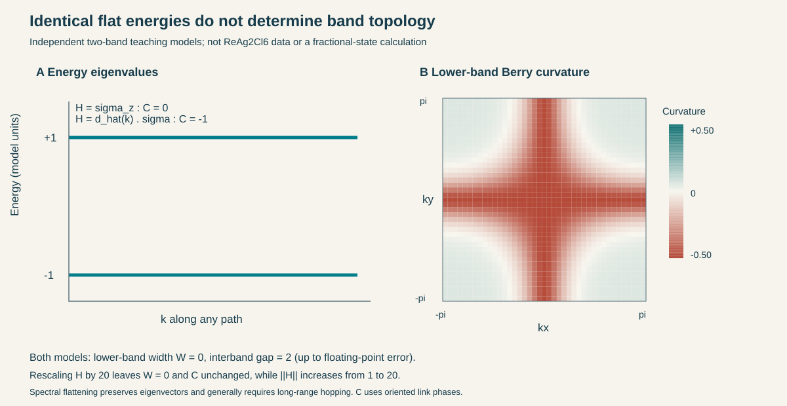
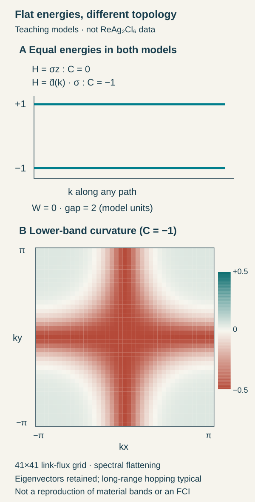
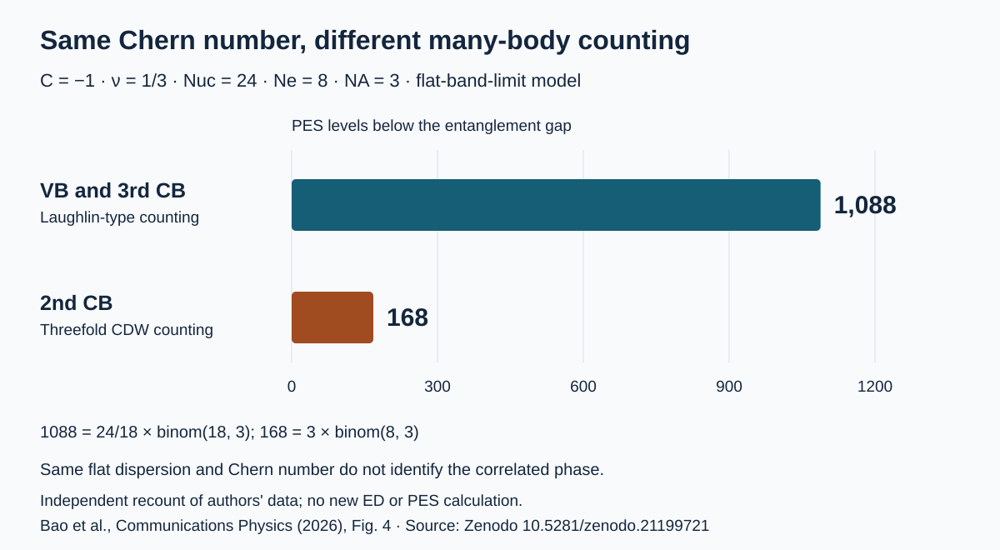
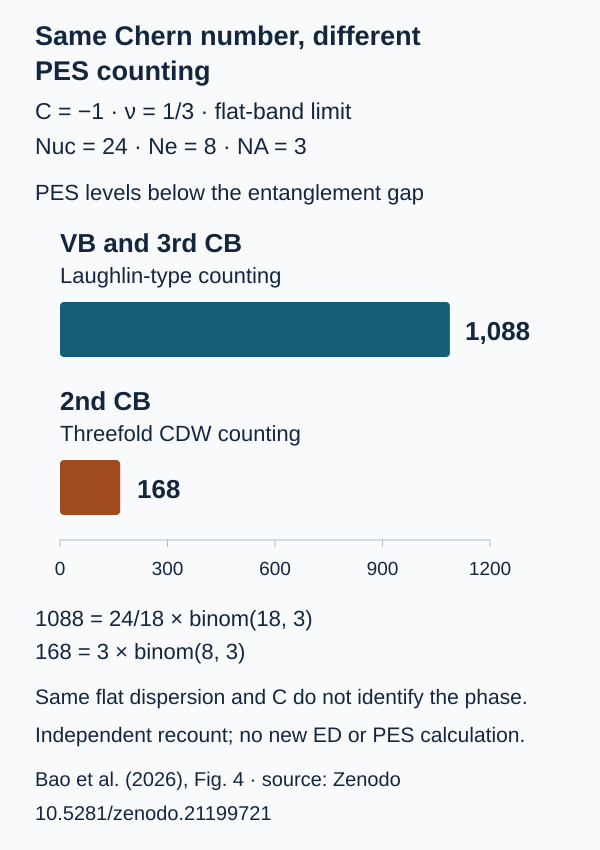

Correlated States in Flat Chern Bands: From Dispersion to Quantum Geometry
Magnetic order and spin–orbit coupling in ReAg₂Cl₆, and why bands with the same Chern number favor different fractional or charge-ordered states
TECH REVIEW · 26 October 2026 · Computational materials science · Strong correlations · Band topology

Contents
- What changes when a band becomes narrow
- Identical energies can carry different topology
- A magnetic supercell and a gap opened with spin–orbit coupling
- Why the same Chern number and filling can produce different phases
- Why three low-energy levels do not establish an FCI
- What computational materials research should compare next
- References
Flattening an electronic band makes interactions more influential. When momentum states have nearly the same energy, the energy gained or lost through interactions can play a larger role in deciding which states electrons occupy. Yet a flat band does not by itself imply a fractional topological phase. Bands with identical widths can have different momentum-dependent wave functions, and interactions can favor a periodic charge pattern rather than a spatially uniform topological liquid.
Bao and colleagues’ study of ReAg₂Cl₆ offers a concrete way to examine this distinction. The authors predict flat Chern bands in a monolayer with 120° antiferromagnetic order and spin–orbit coupling, then calculate competition between fractional Chern insulators (FCIs) and charge-density waves (CDWs) at partial filling. The central question is which physical structure produces the band, and which additional information determines the many-electron state within it. The paper was accepted on 25 September 2026 and released as an accepted manuscript on 25 October. A preprint first appeared in 2024; the recent journal release is not the study’s initial disclosure. [1]
What changes when a band becomes narrow
Write the energy of band as , and denote its maximum minus minimum over the Brillouin zone by . This bandwidth measures the kinetic-energy difference involved in moving between momenta within the band. When an effective interaction scale exceeds , assigning occupations from independent-electron energies may no longer adequately describe the ground state.
The energy separation from other bands also matters. Even a narrow band can mix with neighboring bands when becomes comparable to or larger than , weakening the assumptions behind projection onto a single band. The hierarchy is a useful starting point for a projected interacting model, not a sufficient condition for a particular phase. Screening, filling, wave-function structure and competing orders still have to be considered. Whether this hierarchy holds under realistic screening conditions in ReAg₂Cl₆ requires further investigation. [1,2]
Identical energies can carry different topology
An eigenstate acquires a geometric phase when transported around a small closed loop in momentum space. Berry curvature describes the local density of that phase. For an isolated band, integrating the curvature over the Brillouin zone and dividing by gives an integer Chern number. Plotting energies alone does not reveal this eigenstate information.
Consider two educational two-orbital models that we computed independently. The Pauli matrices act in the two-orbital space. The first model is . Its energies are and at every momentum, and the lower-band eigenvector is momentum independent. Its Chern number is zero.
Define the second model by
Here the lattice constant is set to one,  are dimensionless momenta, and energies are in model units. This model also has energies exactly and . Its eigenvectors vary across the Brillouin zone, however, and their curvature integrates to a nonzero value. The Fukui–Hatsugai–Suzuki method, which computes the Chern number from overlaps of neighboring eigenvectors, gives for the lower band with our stated orientation convention. [3,4] The teaching calculation was performed with NumPy 2.0.2. [5,6]
are dimensionless momenta, and energies are in model units. This model also has energies exactly and . Its eigenvectors vary across the Brillouin zone, however, and their curvature integrates to a nonzero value. The Fukui–Hatsugai–Suzuki method, which computes the Chern number from overlaps of neighboring eigenvectors, gives for the lower band with our stated orientation convention. [3,4] The teaching calculation was performed with NumPy 2.0.2. [5,6]


The same integer values were obtained on 31×31, 61×61 and 121×121 grids. Numerical bandwidths were below , and multiplying each momentum’s eigenvector by an arbitrary phase left the results unchanged. A separate check integrated the analytic Berry curvature without using eigenvector links and confirmed the value and sign. This small calculation establishes the distinction between energy eigenvalues and the topological information in eigenvectors.
A magnetic supercell and a gap opened with spin–orbit coupling
The proposed starting point in ReAg₂Cl₆ is a coplanar 120° antiferromagnetic order rather than a moiré twist angle. The larger magnetic unit cell folds bands derived from Re 5d orbitals. In combination with this electronic structure, strong spin–orbit coupling (SOC) produces isolated Chern bands in the authors’ calculation. Comparisons that separately change atomic structure, noncollinear spin order and SOC explain the mechanism more clearly than a band plot alone. [1]
Three coplanar spins have zero scalar spin chirality, . One therefore cannot simply transfer the explanation in which noncoplanar scalar chirality acts as an effective magnetic field for electrons. Symmetries and band hybridization must be calculated with the spin arrangement and SOC together. Nor does the result establish a general rule that any 120° magnetic order produces Chern bands.
The revealing feature of this material calculation is that several Chern bands within one material do not favor the same correlated state. An integer band invariant alone cannot explain that difference.
Why the same Chern number and filling can produce different phases
The quantum metric describes how much the overlap magnitude between normalized Bloch states decreases at neighboring momenta. Together with Berry curvature, which describes the phase accumulated around a small loop, it characterizes the quantum geometry of band eigenstates that an energy plot does not show. A Chern number integrates curvature over the whole zone and therefore does not retain all this local information.
Projecting an interaction onto a single band introduces overlaps of Bloch eigenvectors into its matrix elements. In a simplified notation, the momentum-transfer component of the projected density takes the form

Here  is the band’s periodic Bloch eigenvector, and
is the band’s periodic Bloch eigenvector, and  create and annihilate electrons in that band. This teaching expression omits phases associated with basis-atom positions and orbital-resolved components. The paper’s onsite multiorbital interaction contains orbital- and spin-resolved form factors. Bands with the same can have different eigenvector overlaps and quantum geometry, hence different projected interactions. Removing energy dispersion does not remove this eigenvector information.
create and annihilate electrons in that band. This teaching expression omits phases associated with basis-atom positions and orbital-resolved components. The paper’s onsite multiorbital interaction contains orbital- and spin-resolved form factors. Bands with the same can have different eigenvector overlaps and quantum geometry, hence different projected interactions. Removing energy dispersion does not remove this eigenvector information.
The study’s exact diagonalization uses single-band projection in the flat-band limit. It considers finite systems at filling , with 8 or 9 electrons in 24 or 27 magnetic unit cells. It must not be read as a many-body calculation that retains the material’s reported residual band dispersions. The table separates these two stages. [1]
| Band | Width reported from the electronic structure | Single-particle | Diagnosis at after removing dispersion |
|---|---|---|---|
| Valence band (VB) | 20.8 meV | −1 | Evidence for an FCI |
| Second conduction band (CB) | 32.1 meV | −1 | Evidence for a CDW |
| Third CB | 50.2 meV | −1 | Evidence for an FCI |
The table does not show that wider bands favor FCIs. Dispersion was removed from all three bands in the many-body calculation. Its implication is that even at the same Chern number, filling and flattened dispersion, the projected interactions can favor different states. Testing whether these states survive the restoration of realistic is a further calculation.
Why three low-energy levels do not establish an FCI
A group of three low-energy states at is an important clue, but a CDW can also yield a similar level count by breaking translation symmetry. Ground-state momenta, spectral flow under flux inserted through the boundary conditions, and the particle-entanglement spectrum must therefore be examined together.
The particle-entanglement spectrum (PES) is obtained by mathematically tracing out some particles, then converting eigenvalues of the remaining reduced density matrix into . Counting states in a low- branch tests their correspondence with the exclusion rules of candidate many-body states. This operation is not a report of physically removing particles and directly measuring the same spectrum in an experiment.
Let be the number of magnetic unit cells, the total electron number and  the particle number retained after the partial trace. Here the PES uses . Laughlin-type counting allows at most one particle in any three consecutive single-particle orbitals arranged cyclically for the count. Its number of allowed states differs from that of three CDW configurations:
the particle number retained after the partial trace. Here the PES uses . Laughlin-type counting allows at most one particle in any three consecutive single-particle orbitals arranged cyclically for the count. Its number of allowed states differs from that of three CDW configurations:

Recounting the low PES branches in the public Figure 4 source data gives 1,088 for the VB and third CB, and 168 for the second CB. This independent check compares the published spectrum’s counts with combinatorial arithmetic; it does not re-diagonalize the paper’s many-body Hamiltonian. The latest supplementary information also distinguishes the VB from the third CB: the VB does not retain a global many-body gap across the full flux range. The two bands should not be presented as equally strong stability candidates. [1,7]


Each diagnostic now has a clear role. The level multiplicity narrows the candidates; flux flow tests their connection under changing boundary conditions; PES counting adds evidence that distinguishes a simple charge pattern from a fractionalized state. No individual figure establishes the finite-temperature phase of a physical material.
What computational materials research should compare next
The next study cannot use flatness as its only input. Noncollinear magnetic calculations should first test whether 120° order is favored over competing arrangements, how SOC and a substrate change band isolation, and how screening reduces the projected interaction. Residual dispersion, band mixing, system size and disorder can then be restored to reassess competition between FCIs and CDWs.
An AI screening model for candidate materials likewise needs more than an objective that minimizes . Energy differences between magnetic orders, band separation, the Chern number, eigenvector-based geometry and effective interaction strength all matter. This is a condition on the physical inputs a model should preserve, not a claim that a particular surrogate has been validated.
The companion review of quantum-dynamics algorithms asks which error criteria should guide the computation once the model and observables have been specified.
References
- [1]K. Bao, R. Shi, H. Wang, J. Guo, and J. Wang, Flat Chern bands and correlated states in spiral magnet, Commun. Phys. (2026), Article in Press.
- [2]K. Sun, Z. Gu, H. Katsura, and S. Das Sarma, Nearly flatbands with nontrivial topology, Phys. Rev. Lett. 106, 236803 (2011).
- [3]X.-L. Qi, Y.-S. Wu, and S.-C. Zhang, Topological quantization of the spin Hall effect in two-dimensional paramagnetic semiconductors, Phys. Rev. B 74, 085308 (2006).
- [4]T. Fukui, Y. Hatsugai, and H. Suzuki, Chern numbers in discretized Brillouin zone: Efficient method of computing (spin) Hall conductances, J. Phys. Soc. Jpn. 74, 1674 (2005).
- [5]AI Tech Review, 평탄밴드와 관측량에 맞춘 동역학 리뷰, GitHub (2026), commit 97f86f5.
- [6]C. R. Harris et al., Array programming with NumPy, Nature 585, 357 (2020); NumPy Developers, NumPy, version 2.0.2 (2024).
- [7]K. Bao, Supplementary data for “Flat Chern bands and correlated states in spiral magnet”, Zenodo (2026), dataset record 21199721.